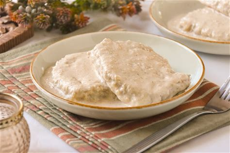

Lomo al Pepe
Home

Descripción
Un plato riquisimo de Lomos al Pepe en toda su salsa.
Ingredientes
- Lomos
- Concentrado de carne (bovril)
- Macarrones grandes: Talla 8
- Pepitas de pimienta
- Nata para cocinar
- Cebolla
Pasos
- Freir el Lomo en una sarte con un poco de aceite de oliva.
- Cocer los macarrones a fuego medio
- En una sarten, poner la nata para cocinar durante dos minutos y añadir junto con la cebolla cortada en tiras finas
- Añadir a la nata una cucharada pequeña de Bovril
- Una vez cocinado todo, se mezcla todo para que los lomos cojan el sabor
- Y por ultimo, se emplata todo junto y listo para comer.